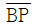
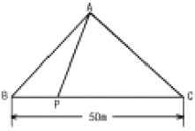
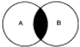
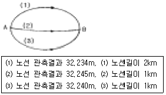
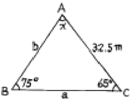
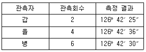
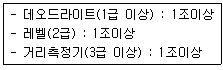

측량및지형공간정보산업기사 (2005-03-20 기출문제)
1과목: 응용측량
1. 1년을 통하여 355일간은 이보다 내려가지 않는 수위를 무엇이라 하는가?
- 저수위
- 갈수위
- 최저수위
- 평균최저수위
(정답률: 알수없음)

2. 축척 1/1,000의 도면상에서 두 변의 길이가 19.4㎝와 17.6㎝이며, 이 두변 사이에 낀 내각이 67°24′인 삼각형의 실제 면적은?
- 15,761m2
- 15,771m2
- 15,781m2
- 15,791m2
(정답률: 알수없음)
3. 수심 H인 하천의 유속측정에 있어서 수면깊이가 0.2H, 0.6H, 0.8H인 지점의 유속이 0.752m/sec, 0.584m/sec, 0.448m/sec 일 때 3점법에 의한 평균유속은?
- 0.584m/sec
- 0.589m/sec
- 0.592m/sec
- 0.595m/sec
(정답률: 알수없음)
4. 하천측량에서 보통 많이 쓰여지는 삼각망은?
- 교호 삼각망
- 사변쇄망
- 유심 삼각망
- 단열 삼각망
(정답률: 알수없음)
5. 토적곡선(mass curve)에 의한 토량계산에 대한 다음 설명중 틀린 것은?
- 곡선은 누가토량의 변화를 표시하는 것이고, 그 경사가 (-)는 깎기구간, (+)는 쌓기구간을 의미한다.
- 측점의 토량은 양단면평균법으로 계산할 수 있다.
- 곡선의 극소점은 쌓기구간에서 깎기구간으로 변하는 점을 의미한다.
- 토적곡선을 활용하여 토공의 평균운반거리를 계산 할수 있다.
(정답률: 알수없음)
6. 경관평가요인 중 일반적으로 시설물의 전체 형상을 인식할 수 있고 경관의 주제로서 적당한 수평시각(θ)의 크기는?
- 0Ω ＠ ≤ ＠ 10Ω
- 10Ω ＜ ≤ ＠ 30Ω
- 30Ω ＜ ≤ ＠ 60Ω
- 60Ω ＠ ≤ ＜ 90Ω
(정답률: 알수없음)
7. 삼각형 세변의 길이가 각각 5mm, 7mm, 8mm일 때 실제 면적은 얼마인가? (단, 축척은 1:1000 이다.)
- 17.32m2
- 17.32km2
- 20m2
- 20km2
(정답률: 알수없음)
8. 터널측량 중 A점에 기계를 세우고 B점에 표척을 거꾸로 세워 천장으로부터 높이를 측정하여 1.03m를 읽었다면 B점의 지반고는? (단, A점의 지반고는 10.30m, 기계고는 1.44m)
- 10.55m
- 11.64m
- 12.77m
- 13.25m
(정답률: 알수없음)
9. 종단곡선을 설치하기 위한 제원을 계산하고자 할 때 필요하지 않는 것은?
- 종곡선장
- 종곡선 시점의 계획고
- 종단구배
- 횡단구배
(정답률: 알수없음)
10. 단곡선의 설치에서 곡선의 반경 R=500m, 교각 I=60°일 때 접선길이(T.L.)와 곡선길이(C.L.)은?
- T.L.=288.68m, C.L.=523.60m
- T.L.=308.68m, C.L.=523.60m
- T.L.=288.68m, C.L.=533.60m
- T.L.=308.68m, C.L.=533.60m
(정답률: 알수없음)
11. 구조물 경관예측을 위한 사전 조사항목으로 가장 거리가 먼 것은?
- 식생
- 지형
- 현황사진
- 지하배관
(정답률: 알수없음)
12. 다음 완화곡선의 성질에 대한 설명으로 틀린 것은?
- 완화 곡선 반지름은 시점에서 무한대, 종점에서 원곡선의 반지름 R로 된다.
- 완화곡선의 접선은 시점에서 직선에, 종점에서 원호에 접한다.
- 완화곡선에 대한 곡선반경 감소율은 캔트의 증가율과 같다.
- 완화곡선의 시점과 종점의 캔트는 일정하다.
(정답률: 알수없음)
13. 완화곡선의 캔트(cant)계산에서 동일한 조건에서 반경만을 2배로하면 캔트는 몇배가 되는가?
- 4
- 2
- 1
- 1/2
(정답률: 알수없음)
14. 지구에 연직방향인 A, B 2본의 수갱에 의해서 갱내외를 연결하는 경우, 갱외에서 수갱간의 거리가 400m일 때, 수갱깊이가 500m라면 두 수갱간 갱내외에서의 거리 차이는? (단, 지구는 반지름 6,370km의 구로 가정한다.)
- 0.8cm
- 1.6cm
- 3.1cm
- 6.2cm
(정답률: 알수없음)
15. 하천측량에서 횡단면도의 작성에 필요한 측량으로 하천의 수면으로부터 하저까지의 깊이를 구하는 측량은?
- 유속측량
- 유량측량
- 양수표 수위관측
- 심천측량
(정답률: 알수없음)
16. 지상측량의 좌표와 지하측량의 좌표를 같게 하는 측량은?
- 갱내외 연결측량
- 지하 중심선측량
- 터널 좌표측량
- 지하 수준측량
(정답률: 알수없음)
17. 노선 측량의 순서로 가장 옳은 것은?
- 실측→예측→공사측량→도상계획
- 예측→실측→공사측량→도상계획
- 실측→도상계획→예측→공사측량
- 도상계획→예측→실측→공사측량
(정답률: 알수없음)
18. 댐을 축조하기 위한 조사계획 측량에 해당되는 사항이 아닌 것은?
- 수문 자료 조사
- 지형, 지질 조사
- 유지관리 조사
- 재료원 조사
(정답률: 알수없음)
19. 그림과 같은 삼각형의 점A 와 BC 상의 점 P를 연결하여 △ABC의 면적 90m2 를 △ABP=20m2로 분할하고자 할 때 적당한

의 길이는?
- 13.2m
- 11.1m
- 10.5m
- 9.6m
(정답률: 알수없음)
20. 편각법에 의하여 원곡선을 설치하고자 한다. 교점(I.P.)의 추가거리가 1252.50m, 곡선반경이 300m, 교각이 49°30′ 일 때 종단현에 대한 편각은?
- 0°37′55″
- 1°09′06″
- 1°16′40″
- 1°49′30″
(정답률: 알수없음)
2과목: 사진측량 및 원격탐사
21. C-계수가 1500인 도화기로써 촬영고도 3000m로 촬영한 축척 1/20,000인 항공사진을 이용하여 도화작업을 할 때 신뢰할 수 있는 최소 등고선 간격은 얼마인가?
- 2m
- 3m
- 5m
- 10m
(정답률: 알수없음)
22. 사진측량에서 말하는 모델(model)의 정의로 옳은 것은?
- 한쌍의 중복된 사진으로 입체시 되는 부분이다.
- 어느 지역을 대표할 만한 사진이다.
- 한장의 사진이다.
- 편위수정한 사진이다.
(정답률: 알수없음)
23. 다음 중 GIS의 자료형태에서 그리드(grid)에 대한 설명으로 옳지 않은 것은?
- 래스터자료를 셀단위로 저장하는 X, Y좌표격자망
- 정방형의 가상격자망을 채워주는 점 자료
- 규칙적으로 배치된 샘플점의 집합
- 일반적인 벡터형 자료시스템
(정답률: 알수없음)
24. 편위수정에 있어서 만족해야 할 3가지 조건을 기술한 내용중 옳지 않은 것은?
- 샤임 프러그 조건
- 타이 포인트 조건
- 광학적 조건
- 기하학적 조건
(정답률: 알수없음)
25. 다음 중 원격탐측을 위한 위성과 관계없는 것은?
- LANDSAT
- GPS
- SPOT
- IKONOS
(정답률: 알수없음)
26. GIS자료의 품질향상을 위한 방안과 가장 거리가 먼 것은?
- 철저한 인력관리
- 철저한 비용관리
- 논리적 일관성
- 위치 및 속성정확도의 관리
(정답률: 알수없음)
27. 다음 원격측정의 작업내용 중 화상의 질을 높이거나 태양 입사각 등에 의한 영향을 보정해 주는 과정은 무엇인가?
- 자료변환(data handing)
- 복사관측(radiometric) 보정
- 기하학적(geometric) 보정
- 자료압축
(정답률: 알수없음)
28. 편위수정을 거친 사진을 집성하여 만든 사진지도로 등고선이 삽입되어 있지 않은 것은?
- 중심투영 사진지도
- 약조정집성 사진지도
- 반조정집성 사진지도
- 조정집성 사진지도
(정답률: 알수없음)
29. GIS 이용목적에 따른 구분 내용 중 용어 설명이 옳지 않은 것은?
- FM-시설물 관리시스템
- UIS-환경정보체계
- LIS-토지정보체계
- AM-도면자동화시스템
(정답률: 알수없음)
30. 초점거리 15cm, 사진의 크기 23cm×23cm인 사진기로 찍은 종중복도 60%인 밀착사진인화 필름을 입체시 했을 때 기선고도비는?
- 0.4
- 0.6
- 0.8
- 1.0
(정답률: 알수없음)
31. 항공사진에 의한 지형도 제작의 주요과정이 옳게 나열된 것은?
- 기준점측량 →세부도화 →촬영
- 촬영 →기준점측량 →세부도화
- 세부도화 →촬영 →기준점측량
- 촬영 →세부도화 →기준점측량
(정답률: 알수없음)
32. GIS 데이터베이스의 오차 중에서 자료를 처리하는 과정에서 발생하는 오차가 아닌 것은?
- 지리오차
- 입력오차
- 편집오차
- 분석오차
(정답률: 알수없음)
33. 동서 20km, 남북 10km의 지역에 대하여 축척 1/20,000의 항공사진을 종중복 60%, 횡중복 30%로 촬영할 때에 사진매수는 몇장인가? (단, 사진의 크기는 23cm×23cm이고, 매수의 안전율은 30%로 본다. 면적에 의한 간이 계산법에 의한다.)
- 10매
- 24매
- 34매
- 44매
(정답률: 알수없음)
34. 지상길이 100m의 교량이 있다. 초점거리 150mm의 항공사진 촬영용 카메라로 비행고도 3000m에서 촬영하였을 때 수직 사진상에 나타난 교량의 길이는 얼마인가?
- 5.0mm
- 0.5mm
- 2.0mm
- 0.2mm
(정답률: 알수없음)
35. 한쌍의 항공사진을 좌우로 떼어놓고 입체시 하는 경우 지상면의 고저관계가 가장 옳은 것은?
- 과고감이 적어진다.
- 과고감이 커진다.
- 고저관계를 알 수 없다.
- 대체로 실지와 같은 모양으로 보인다.
(정답률: 알수없음)
36. GPS를 이용한 위치결정에 발생하는 주요 오차 요인과 가장 거리가 먼 것은?
- 관측자오차
- 위성궤도오차
- 전리층오차
- 대류권지연
(정답률: 알수없음)
37. 표고 100m의 평탄지를 초점거리 21cm, 사진크기 18cm×18cm의 카메라로 촬영고도 1200m(촬영기준면 0m)에서 촬영한 사진상에 철탑이 찍혀있다. 사진기선길이(b)는 63mm, 철탑의 시차차는 1.0mm이다. 철탑의 높이는?
- 약 19m
- 약 25m
- 약 31m
- 약 40m
(정답률: 알수없음)
38. 지하시설물에 대하여 탐사를 실시하고자 하는 경우, 일정간격을 유지하며 탐사하는 것이 일반적이다. 이 때 탐사의 간격을 얼마로 하는 것이 가장 적당한가?
- 5m
- 10m
- 20m
- 30m
(정답률: 알수없음)
39. 어떤 항공사진상에 실제길이 150m의 교량이 5mm로 나타났다면 이 사진에 포함되는 실 면적은 얼마인가?(단, 사진크기 = 23cm×23cm이다.)
- 47.61km2
- 15.87km2
- 476.1km2
- 158.7km2
(정답률: 알수없음)
40. Bool 대수를 사용한 면의 중첩에서 그림과 같은 논리연산을 바르게 나타낸 것은?

- A AND B
- A OR B
- A NOT B
- A XOR B
(정답률: 알수없음)
3과목: GIS 및 GPS
41. A점에서 트래버스 측량을 실시하여 A점에 되돌아 왔더니 위거의 오차 40cm, 경거의 오차는 25cm였다. 이 트래버스측량의 전측선장의 합이 943.5m 였다면 트래버어스 측량의 폐합오차는?
- 1/1,000
- 1/2,000
- 1/3,000
- 1/4,000
(정답률: 알수없음)
42. 지구를 구체로 취급할 때 위도 1°사이의 거리는? (단, 지구의 반지름은 6,370㎞로 계산)
- 약 91km
- 약 101km
- 약 111km
- 약 121km
(정답률: 알수없음)
43. 다음 중 어떤 특정한 현상(강우량, 토지이용현황 등)에 대해 표현할 것을 목적으로 작성된 지도를 일컫는 용어는?
- 주제도
- 챠트
- 지형분석도
- 시설물도
(정답률: 알수없음)
44. A, B 두점간의 고저차를 구하기 위해 그림과 같이 (1), (2), (3) 노선을 경유해서 직접 수준측량을 실시한 결과 다음값을 얻었다. 최확치는?

- 32.256m
- 32.246m
- 32.241m
- 32.250m
(정답률: 알수없음)
45. 지구를 타원체로 가정할 때 적도반경이 6377km이고 편평률이 1/299라면 적도반경과 극반경과의 차이는?
- 42.6km
- 41.0km
- 31.3km
- 21.3km
(정답률: 알수없음)
46. 삼각점을 선정할 때의 고려사항이 아닌 것은?
- 삼각형의 내각은 60°에 가깝게 하며, 불가피할 경우는 30°보다 작거나 120°보다 커도 된다.
- 상호간의 시준이 잘 되어 연결 작업이 용이해야 한다.
- 불규칙한 광선, 아지랑이 등의 영향을 받지 않도록 한다.
- 지반이 견고하여야 하며 이동, 침하 및 동결 지반은 피한다.
(정답률: 알수없음)
47. 지형측량의 결과 등고선도가 이용되는 경우로 가장 거리가 먼 것은?
- 지적도를 작성 할 수 있다.
- 종·횡단면도를 작성할 수 있다.
- 정지작업공사의 토공량을 구할 수 있다.
- 등고선만으로는 하천유량을 구할 수 없다.
(정답률: 알수없음)
48. 도상에서 3변 길이를 측정한 결과 각각 21.5cm, 30.3cm, 28cm이었다면 실제면적은? (단, 지형도의 축척 = 1/500)
- 7,325m2
- 7,424m2
- 7,124m2
- 7,240m2
(정답률: 알수없음)
49. 수준측량에서 10km 왕복 관측의 경우에 허용오차가 15mm라면 2km 왕복관측의 경우의 허용오차는?
- 5mm
- 10mm
- 7mm
- 9mm
(정답률: 알수없음)
50. 50m 테이프로 어떤 두 지점 AB간의 거리를 측정하였더니 175m이었다. 그런데 50m 테이프를 표준척과 비교하였더니 3cm가 짧음을 알았다. 실제의 AB간의 거리는 얼마인가?
- 173.950m
- 174.895m
- 175.1⑤m
- 176.⑤0m
(정답률: 알수없음)
51. 삼각망 중에서 단열삼각망은 어디에 많이 이용되는가?
- 소규모지역의 삼각측량
- 지적경계측량
- 운동장의 지형측량
- 하천측량
(정답률: 알수없음)
52. GIS 자료의 저장방식을 파일 저장방식과 DBMS(Data Base Management System)방식으로 구분할 때 파일 저장방식에 비해 DBMS 방식이 갖는 장점이 아닌 것은?
- 자료의 신뢰도가 일정 수준으로 유지될 수 있다.
- 새로운 응용프로그램을 개발하는데 용이하다.
- 시스템이 간단하여 경제적이다.
- 사용자 요구에 맞는 다양한 양식의 자료를 제공할 수있다.
(정답률: 알수없음)
53. 그림과 같이 측량을 하였다. 측선 a의 길이는?(단, 측각오차는 없음.)

- 35.2m
- 31.6m
- 21.6m
- 26.4m
(정답률: 알수없음)
54. 임의의 각을 갑, 을, 병 세사람이 측정한 결과가 다음과 같다. 이 관측각의 최확값은?

- 126°42'30"
- 126°42'31"
- 126°42'36"
- 126°42'29"
(정답률: 알수없음)
55. 거리 100m에 대한 스타디아측량 결과 연직각이 15°였다. 이때 시거선의 읽기오차가 0.7㎝였다면, 이로 인한 거리의 측정오차는? (단, K=100, C=0)
- 55.3㎝
- 65.3㎝
- 75.3㎝
- 85.3㎝
(정답률: 알수없음)
56. 하천이나 항만의 깊이를 표시할 때 일반적으로 사용하는 지형측량 방법은?
- 등고선법(等高線法)
- 음영법(陰影法)
- 점고법(點高法)
- 단채법(段採法)
(정답률: 알수없음)
57. 평판측량에서 전진법으로 측점 A를 출발하여 순서대로 B, C, D, E, F, A로 돌아왔을 때 폐합오차가 20cm이었다. D점의 오차 배분량은? (단, AB=70m, BC=60m, CD=50m, DE=40m, EF=20m, FA=30m)
- 11.2cm
- 12.0cm
- 13.3cm
- 14.4cm
(정답률: 알수없음)
58. 일반적으로 격자구조가 벡터구조에 비해 갖는 장점이 아닌것은?
- 그래픽의 정도가 높다.
- 자료구조가 단순하다.
- 레이어 중첩을 이용한 분석이 용이하다.
- 시뮬레이션이 용이하다.
(정답률: 알수없음)
59. 경사거리 69.52m인 두 점간의 고저차가 3.5m일 때 두점간의 수평거리는?
- 69.43m
- 69.53m
- 69.63m
- 69.73m
(정답률: 알수없음)
60. 다음중 래스터식 자료구조가 아닌 것은?
- 그리드(Grid)
- 셀(Cell)
- 선(Line)
- 픽셀(Pixel)
(정답률: 알수없음)
4과목: 측량학
61. 공공측량으로 손실을 받은자와 측량계획기관 간에 협의가 성립되지 않았을 경우 재결신청 기관은?
- 건설교통부장관
- 국토지리정보원장
- 관할토지수용위원회
- 중앙토지수용위원회
(정답률: 알수없음)
62. 다음중 영구표지에 해당되는 것은?
- 측표
- 표기
- 검조의
- 측량표지막대
(정답률: 알수없음)
63. 기본측량과 공공측량의 측량기준 중 회전타원체면상의 값으로 표시하는 것은?
- 거리와 면적
- 지구의 형상
- 위치
- 측량의 원점
(정답률: 알수없음)
64. 다음 중 공공측량으로 지정할 수 있는 일반측량이 아닌 것은?
- 측량실시 지역의 면적이 1000m2이상인 삼각측량, 지형측량 및 평면측량
- 측량 노선길이가 10km이상인 수준측량
- 지하시설물 측량
- 촬영지역의 면적이 1㎞2이상인 측량용 사진의 촬영
(정답률: 알수없음)
65. 다음 중 측량법에서 가장 무거운 벌칙을 받는 경우는?
- 측량표의 이전행위자
- 국토지리정보원장이 고시한 기본측량의 성과에 저촉되는 측량성과를 사용한 자
- 측량업의 등록을 하지 아니하고 영업을 한 자
- 다른 사람의 입찰행위를 방해한 자
(정답률: 알수없음)
66. 기본측량의 경우 측량성과를 고시하여야 하는데 다음 사항중 고시에 포함되지 않는 것은?
- 측량의 종류 및 정확도
- 측량실시의 시기 및 지역
- 측량성과의 보관장소
- 측량성과의 보존년한
(정답률: 알수없음)
67. 측량업의 등록기준에서 아래의 표와 같은 장비기준을 요구하는 측량업은?

- 측지측량업
- 일반측량업
- 공공측량업
- 수치지도제작업
(정답률: 알수없음)
68. 다음 중 측량업 등록을 할 수 있는 자는?
- 파산자로서 복권되지 아니한 자
- 금치산 또는 한정치산의 선고를 받은 자
- 1년 전에 측량업의 등록이 취소된 자
- 금고이상의 형을 받고 3년이 경과된 자
(정답률: 알수없음)
69. 기본측량의 실시로 인하여 손실을 받은자가 규정에 의하여 재결을 신청하고자 할 때 재결신청서에 기재할 사항으로 잘못된 것은?
- 협의의 내용
- 손실발생의 사실
- 측량기술자의 성명 및 주소
- 보상받고자 하는 손실액과 그 내역
(정답률: 알수없음)
70. 기본측량의 측량성과와 측량기록 사본의 교부를 받고자 하는 자는 누구에게 신청하여야 하는가?
- 건설교통부장관
- 측량협회장
- 측량심의회위원장
- 국토지리정보원장
(정답률: 알수없음)
71. 지형도상에 표시하는 사항중 바다와 연하는 해안수애선 표시는 어느 시기를 기준으로 하는가?
- 간조시의 수애선
- 만조시의 수애선
- 평균 해수면의 수애선
- 측량당시의 수애선
(정답률: 알수없음)
72. 다음중 난외주기(欄外註記)에 포함되지 않는 사항은?
- 지명(地名)
- 도엽번호(圖葉番號)
- 축척(縮尺)
- 편집년도(編集年度)
(정답률: 알수없음)
73. 측량의 실시공고내용 중 필수적 사항이 아닌 것은?
- 측량의 종류
- 측량실시자
- 측량의 실시기간
- 측량의 실시지역
(정답률: 알수없음)
74. 1:5,000 지형도상에 표시하는 행정경계선은 어느 단위까지 표시하도록 규정되어 있는가?
- 시계
- 군계
- 면계
- 리계
(정답률: 알수없음)
75. 공공측량의 측량성과와 측량기록의 사본을 교부 받고자 하는자는 어디에 신청하여야 하는가?
- 공공측량작업기관
- 국토지리정보원장
- 시·도지사
- 공공측량계획기관
(정답률: 알수없음)
76. 다음 측량용역대가의 기준에 관한 설명중 틀린 것은?
- 건설교통부장관은 측량용역대가의 기준을 정한 때에는 이를 관보에 고시하여야 한다.
- 측량용역대가의 기준은 건설교통부장관 또는 공공측량 계획기관이 정한다.
- 건설교통부장관은 측량용역대가의 기준을 정하고자 할때 재정경제부장관과 협의하여야 한다.
- 측량용역대가는 이를 직접측량비 및 간접측량비로 구분하여 산정한다.
(정답률: 알수없음)
77. 기본측량의 성과 중 허가없이 국외로 반출할 수 있는 경우는?
- 측량용 사진과 해저 지형도
- 축척 5,000분의 1 지도
- 정부를 대표하여 외국정부와 교섭하는 자가 자료로 사용코자하는 지도 및 연안해역기본도
- 대한민국 정부와 외국정부간에 체결된 협정에 의하여 상호 교환코자 하는 측량용 사진
(정답률: 알수없음)
78. 측량 심의회의 심의사항이 아닌 것은?
- 측량도서의 발간
- 공공측량에 관한 계획의 수립
- 공공측량 및 일반측량에서 제외되는 측량의 범위
- 측량기술의 연구발전
(정답률: 알수없음)
79. 측량기기의 검사에 관한 사항으로 틀린 것은?
- 성능검사의 대상·주기·성능기준·방법 및 절차등에 관하여 필요한 사항은 국토지리정보원장이 정한다.
- 성능검사는 외관검사, 구조·기능검사 및 측정검사로 구분하여 행한다.
- 성능검사를 받지 아니한 측량기기를 사용하여 측량을 하여서는 아니된다.
- 성능검사의 신청을 하고자 하는자는 성능검사를 받아야 하는 당해 측량기기를 제시하여야 한다.
(정답률: 알수없음)
80. 건설교통부장관 또는 국토지리정보원장의 권한을 협회 또는 규정에 의하여 허가를 받아 설립된 인력과 장비를 갖춘 기관에 위탁할 수 있는 업무로 옳은 것은?
- 측량기술경력증발급 및 기본측량 심사
- 기본측량 심사 및 공공측량 심사
- 기본측량 심사 및 지도의 심사
- 공공측량 심사 및 지도의 심사
(정답률: 알수없음)